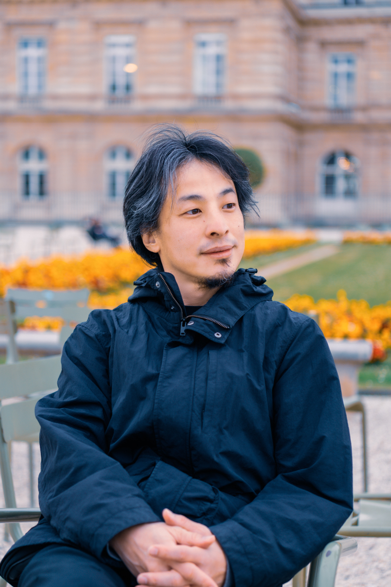

ここをクリック

若気の至り
😎 こんにちは 😎
↓ トムとジェリー（粋な演出）
誕生日が近づいています
親友のホームページにコラムが追加されたよ
名前：たいーにゃ
好きな野菜：みょうが、ブロッコリーの上の部分
東京生まれ東京育ち
😍：GACKT、木村拓哉、Andrew Tate、Pavel Durov、苫米地英人、ビスケットオリバ、跡部景吾、大野智、パブロエスコバル
😠：田村淳、佐藤勝利、松島聡、佐藤二朗、TAKA、藤井風、令和ロマンくるま、ムロツヨシ、福田雄一、DeNA南場、松丸りょうご、りゅうじ、カジサック、小栗旬、前田裕二、きまぐれクック、山里亮太、蘭丸、 KPOPアイドルを犬みたいに扱う人、AIで業務効率化している人 などなど
これまでツイッターで数多くの良質なネタツイを輩出してきたのですが、ツイッターを消してしまいました。なので、これからはここで、ネタツイをしていこうと思います。ツイッターを見ずにネタツイをすることになるので、 逆に、時事ネタに捉われず、普遍的で100年後に見ても面白いネタツイが出来るかもしれませんね。
YouTubeチャンネル「DROPOUT ドロップアウトした冒険者たち」にて公開された動画内で、GACKTがNISAについて言及した。
この動画が話題になった後の主な反応は二つ。「GACKTがNISAを投資商品と誤認しているとバカにする人」と、「仕組みやリスクを十分理解しないまま、周囲に流されて投資している人に対する警鐘としては間違っていないと擁護する人」だ。
これらの意見はどちらも浅はかであり、たいーにゃに言わせればナンセンス。結論、GACKTは一切悪くない。むしろ、悪いのはあなたである。
そもそも、GACKTのような富裕層にとってNISAはメリットが少ない。つまり、NISAについて詳しいことは、すなわち貧しいと言うことなのだ。 詳しいこと自体が恥ずかしいとされることがある。例えば、鉄道。たいーにゃの同期がホームに滑り込んできた電車の車体を見て「ふーん、新しいなあ」と言った時、なんて恥ずかしい奴だと思った。 VTuber、フィギュア収集、アニメ鑑賞も同様（言うまでもない）。 これらの情報は、知らなければ知らないほどカッコいいのだ。イケてる男は鉄道の車体の種類を調べないし、YouTubeのアルゴリズムにVTuberに興味があると判断されない。NISAもその類なのだ。 従って、NISAなんて、知らなければ知らないほどカッコいいのだ。NISAについて誤解しているGACKTはイケてる男であり、重箱の隅をつつくように揚げ足をとっているNISA専門家の君たちは、撮り鉄の仲間なのだ（ハム太郎）。
面白すぎて人生がツイッターに乗っ取られてしまいそうだから。ネタツイに支配される人生はユートピアのようで、ディストピアだと思った。誰にも見られないノートにネタツイをし続ける奴が本当のネタツイッタラーだ。
あの感じでメンタル強いんだ
浅いところにある局所的な答えに満足して、自分の考えかのように話す人。具体的には、田村淳。自分で何も考えてないのにそれらしいことだけ言う感じがキモい。あと共感されないけどTAKA。バカなくせに、思想ありますみたいなスタンスだから。 逆に深いのはタモリ。タモリが何考えてるのか全然分からないから。
LINEは機能のほとんどが要らないし、広告も多い。送信取り消しに金かかるとかダサい。芸能人でいうと、田村淳（芸人もできます、勉強もできます、AIも詳しいです、オンラインサロンもやってます、みたいな多彩ヅラしているものの、評価されているのは芸人だけ、 と言うのがLINEにそっくり）。Telegramは広告がないし、チャットと電話だけでソリッド。芸能人でいうとタモリ。
Suicaの新キャラクターの名前が公募で選ばれるそうです。日々、言の葉を操る文筆家として活動している者として見過ごすわけにはいかず、応募しました。まず、「うさぎ」「紫」「B案」「Suica」などにかけた愛称で応募している人はセンスがないです（唐突な辛口）。 当然、多くの人がそれらにかけた愛称を応募するので差別化が難しいし、今日（2026/11/18）の発表会で、選考委員長の小山薫堂氏は、新しい名前について、何十年、さらには100年以上も世界の人々に覚えてもらえるものになってほしいという期待を口にしています。 選考委員長の意向も確認せず、一時的に話題になっているだけのワードに飛びつくのはプロ失格。また、「タッチ」「改札」などにかけるのも悪手と言えるでしょう（今後数十年に渡って現状の利用方法が継続するとは限らないため）。 現在、Suicaは、「移動と少額決済のデバイス」から「生活のデバイス」へ、と言う理念を掲げていることを踏まえると、新キャラクターは、単なるSuicaのキャラクターではなく、 人々の普遍的な日常に寄り添い、互いに成長する仲間の象徴であると言えるでしょう。これらの内容から、選考委員会の選考基準は以下の11個です（断言）。
さて、選考基準が明らかになりましたね。では、実際に、たいーにゃがどんな想いを込めて、どんな名前で応募したのかは次の機会に。
面倒すぎるから。
肺がスースーした。
最後までチョコたっぷりってほどチョコを感じたことはないからです。
ヌメロンの最善手に関する既存の考察は、全ての数字が同様に確からしく選ばれるという前提があるので、間違えています。例えば、四桁の場合、1234,9876,2468という数字を設定する確率は低くなるでしょう。 おそらく、1548,4179,3952のように、よりランダムに感じる数字を選ぶ確率の方が大きいはずです。このように、単調増加しない、単調減少しない、数字が連続しない、等差数列でない、などの要素を基に全ての数字の羅列(10*9*8*7通り)に対して「ランダム度」を付与し、 ランダム度が高い方が選ばれやすいという前提のもとで考察をしなくては意味がないと思います。そして、この理論をAIに話し、Pythonでアルゴリズム作ってって言えば、既存の最善手よりもより優れた方法が見つかると思います。 ただし、ワイはさらにその上を行く理論を既に発見しています。この話はまた今度。
来たるフットサルに備えて、自分が今どのくらい走れるのかなと思って、駒沢公園を一周ストップウォッチ片手に走ってみました。記録は、11分09秒（一周2.14km）。1500mに換算すると、7分49秒。手元のスマート・フォンヌで検索したところ、 体力テストの男子学年別1500m平均タイムは、中一が7分04秒、中二が6分30秒、中三が6分18秒、高一が6分28秒、高二が6分12秒、高三が6分05秒とのこと（ワイ7分49秒）。これがオトナになるってことなんですかね。トホホ。。。
近所にゲートボール場があって、そこに住み着いている猫がいる。おばさんたちがよくエサをあげてて、みんなで撫でたりしてる。よく野生動物を素手で触れるよなと思う。絶対雑菌だらけでしょ。
ラーメンって麺が要らないと思う。肉うどんにとっての肉吸いみたいな感じで、麺のないラーメンをスープとして楽しみたい。麺の分を水餃子にして欲しい。
AIで業務を効率化しましたって言ってる人がいて、内容を見てみたら、「メールの内容を15分間に一回AIが見て、その内容をSlackで送ってくる」「カレンダーの内容をGeminiが取得して予定を教えてくれる」ってものでした。 普通にメールとカレンダー見た方がはえーよbro
野球選手はイチロー、新庄、大谷、ダルビッシュ、清原、常松くん以外知らないが、松井秀喜はなんとなく聞いたことがあります。巨人の監督になると聞きました。ぜひ、頑張って欲しいですね。
パッキャオ、マイクタイソン、ライアンガルシアと試合するって流れてたと思うんだけど、全部実現してないのはなぜ？結構楽しみにしてたんだけどな。がっかり
DJ松永のDJを見ても何してるのかよく分からなかったけど、DJ SODAのDJをみたらDJ松永の凄さが分かった。イニエスタのプレーが簡単そうに見えるみたいなことだね。

なぜひろゆきの画像を貼っているかというと、たいーにゃは、このようにHTML丸出しな昔ながらのホームページを見ると、なぜかひろゆきを思い出すからです。CSSは甘えだよね。
インスタで流れてきたゲームが面白そうだったのにアプリを入れてみたら途中から有料だったから自分で作りました。でも、全部無料のやつ使ったからちゃんと読み込めなかったりします。
遊びたい方はこちらからどうぞ。
１）URLを作成 ２）URLを友達に送る ３）二人で遊ぶ
ワンピースの最終回について、ずっと前から友人たちに話しているのですが、文章にしないと後で言った言わないになりそうなので、ここに書いておきます。 まず、海賊王になるのは、バギーです。具体的には、ルフィと黒ひげが戦い、なんやかんやでルフィが勝ちます。 直後、新聞を書いてる鳥みたいなやつ（名前は忘れました）が倒れている黒ひげと、偶然そこに居合わせたバギーを見て、バギーが黒ひげを倒したと勘違いし、バギーを海賊王として世界中に報道します。 全てを知っているナミはルフィに対し、「あなたこれで良いの！？海賊王になるのが夢だったんじゃないの！」と言いますが、ルフィは「別にいいンだ🎶一番自由なやつが海賊王だ！」と言います。 時が飛んで10年後、土管の上に座るウソップが、3人の子供達を前に麦わらの一味とした冒険の一部始終を語りますが、子供達に嘘つき扱いされます。 そのやりとりを聞いていたルフィが子供達の後ろから「ニッシッシ（笑）」みたいな反応をして終わりです。
海底でしょうね。そこ（底）においてきたのでしょう。
若気の至り